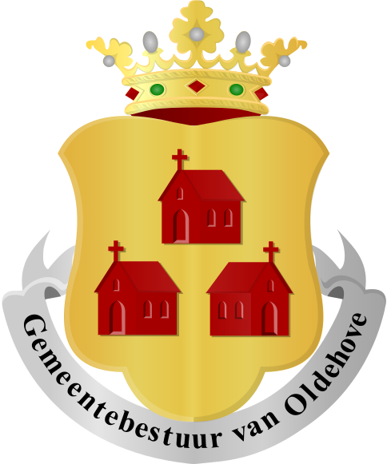

De Oldenhove is het symbool van de stad Leeuwarden. In 1529 startte de bouw van de Oldehove.
De Oldehove heeft een hoogte van ruim 39 meter en heeft een trap met totaal 183 treden.
Ook is de Oldehove een populaire trouwlocatie.